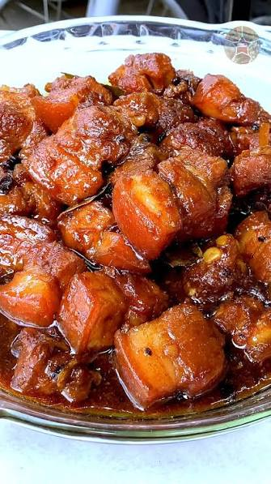

Humba Recipe
Home

Description
Humba is a popular Filipino slow-cooked pork dish originating from the Visayas region, known for its tender pork belly and rich, sweet-savory flavor. It is distinctively braised in soy sauce, vinegar, and sugar, and uniquely features fermented black beans (tausi) and dried banana blossoms.
Ingredients
- Pork belly (or pork hock)
- Soy sauce
- Vinegar
- Brown sugar (or pineapple juice)
- Fermented black beans (tausi)
- Dried banana blossoms
- Garlic
- Bay leaves
- Whole peppercorns
Steps
- Marinate the pork belly in soy sauce, minced garlic, and black pepper for at least 30 minutes.
- Sear the marinated pork pieces in a hot pot until lightly browned on all sides and the fat renders.
- Pour in the remaining marinade, vinegar, and water, then bring the mixture to a boil without stirring.
- Lower the heat, cover, and simmer for about 45 to 60 minutes until the pork becomes tender.
- Add the brown sugar, fermented black beans (tausi), and dried banana blossoms, then simmer for another 10 to 15 minutes until the sauce thickens.